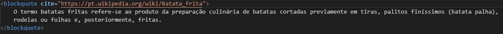
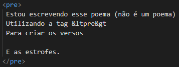

Função: Realiza a marcação de tabelas. Dentro da tag table, utiliza-se a tag tr, que possui a função de definir uma linha da tabela. Dentro da tag tr, utiliza-se a tag th, que faz a marcação da "cabeça" ta tabela, ou seja, o que terá naquela coluna; e a tag td, que faz a marcação de um elemento da tabela.
Exemplo:
| Mês | Economia |
|---|---|
| Janeiro | $100 |
| Fevereiro | $10 |
| Março | $70 |
Função: Realiza a marcação de um texto que foi excluído do documento:
Exemplo: Minha comida favorita é macarrão sanduíche.
Função: Realiza a marcação de um texto que foi inserido no documento:
Exemplo: Minha comida favorita é macarrão sanduíche.
Função: Realiza a marcação de um texto subscrito.
Exemplo: Texto subscrito.
Função: Realiza a marcação de um texto sobrescrito.
Exemplo: Texto sobrescrito.
Função: Realiza a marcação de um conteúdo que é citado de outra fonte. Dentro da tag blockquote, utiliza-se o atributo cite, que possui a função de apontar para informações que explicam o contexto ou a referência da citação.
Exemplo:
O termo batatas fritas refere-se ao produto da preparação culinária de batatas cortadas previamente em tiras, palitos finíssimos (batata palha), rodelas ou folhas e, posteriormente, fritas.
Função: Realiza a marcação de uma citação curta.
Exemplo: Crescemos cada vez que cumprimos uma obrigação.
Função: Realiza a marcação de uma abreviação. Dentro da tag abbr, utiliza-se o atributo title, que possui a função de apresentar informaçõoes ou o significado da abreviação.
Exemplo: IFPR.
Função: Realiza a marcação das informações de contato do autor/proprietário de um documento ou artigo.
Exemplo:
Função: Realiza a marcação do título de uma obra.
Exemplo: Mona Lisa de Leonardo da Vinci.
Função: Substitui a direção de um texto. Dentro da tag bdo, utiliza-se o atributo dir, que possui a função de indicar qual deve ser a direção do texto dentro da tag. rtl = direita para a esquerda, ltr = esquerda para a direita e auto = decide aleatoriamente a direção do texto.
Exemplo: Este texto irá da direita para a esquerda.
Função: Realiza a marcação de um código de computador.
Exemplo: Em HMTL, a tag button define um botão clicável.
Função: Realiza a marcação de um texto pré-formatado, ou seja, o texto que está dentro da tag manterá exatamente a mesma formatação do documento HTML.
Exemplo:
Estou escrevendo esse poema (não é um poema)
Utilizando a tag <pre>
Para criar os versos
E as estrofes.

Função: Realiza a marcação de um texto como uma entrada de teclado.
Exemplo: Pressione Ctrl + C para copiar o texto selecionado.